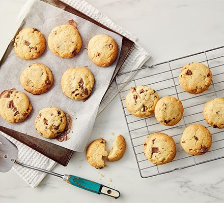

Cookies

Description
Want some cookies? Bring 5 ingredients (or less)!
Serve with a cup of tea.
Ingredients
- 275g flour
- 225g butter, softened
- 110g caster sugar
- 1 tsp cinnamon or other spices (optional)
- 75g white or milk chocolate chips (optional)
Steps
- Heat oven to 170c-190c
- Cream butter in a large bowl, until soft
- Add sugar and beat until the mixture is light
- Sift flour and add optional ingredients
- Bring mixture together in a figure-of-eight motion, until dough
- Freeze the dough! (optional)
- Roll dough into walnut-sized balls and place them slightly apart in a baking sheet
- Flatten balls a little with the palm of your hand
- Bake them for around 10-12 minutes, until golden brown and slightly firm on top
- Leave cookies on a cooling rack for around 15 minutes before serving
- Enjoy!